Movies
Here is my current DVD collection !
I have a couple blu-rays and vhs tapes. Unless specified otherwise, these are all dvds.
I'm not always big on rating movies so I've made a sticker that will pop-up for some of them if I really enjoyed watching them :

Within the sections, there is no specific order to the DVDs.
You can click on each movie to have more info.
If the images don't load, please refresh the page
Marvel |
||||
|
I'm a big Marvel fan ! I read comic here and there. 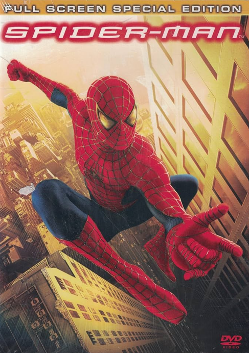 Released : 2002 A shy teenager is bitten by a genetically modified spider and uses his new spider-like abilities to fight injustice as a masked superhero. NotesReleased : 2004 Peter Parker is beset with troubles in his failing personal life as he battles a former brilliant scientist named Otto Octavius. NotesReleased : 2007 A strange black entity from another world bonds with Peter Parker and causes inner turmoil as he contends with new villains, temptations, and revenge. Notes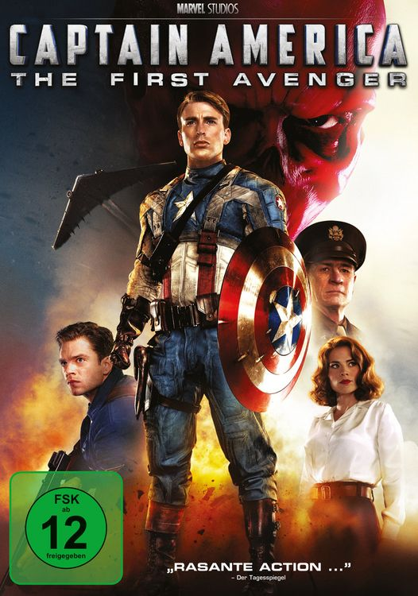 Blu-ray
Released : 2011 Steve Rogers, a rejected military soldier, transforms into Captain America after taking a dose of a "Super-Soldier serum". But being Captain America comes at a price as he attempts to take down a warmonger and a terrorist organization. Notes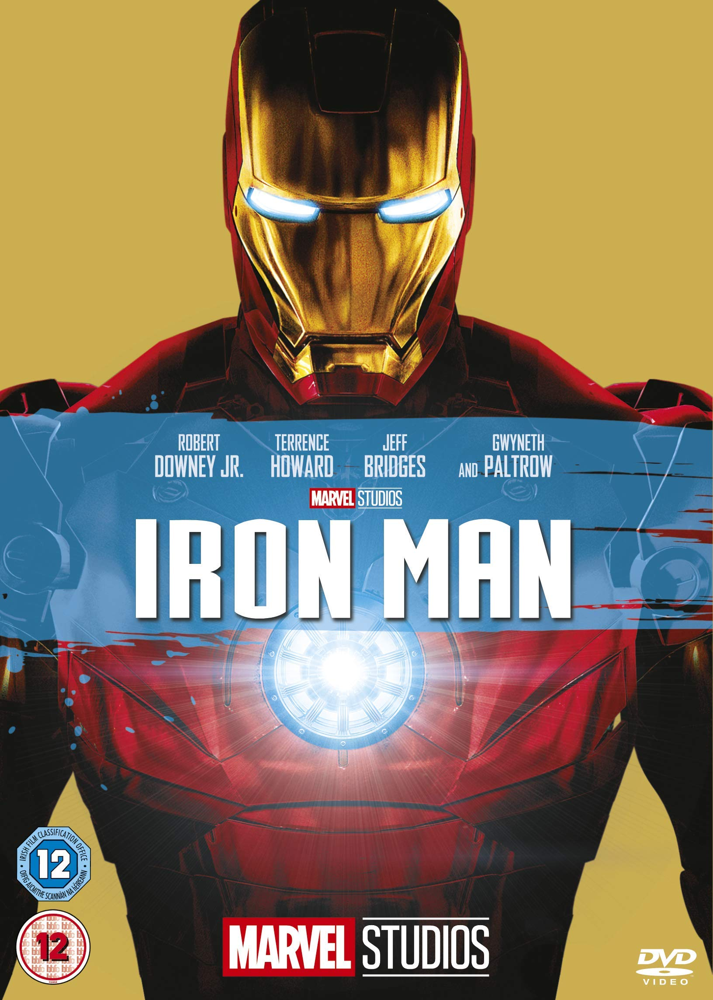 Released : 2008 After being held captive in an Afghan cave, billionaire engineer Tony Stark creates a unique weaponized suit of armor to fight evil. Notes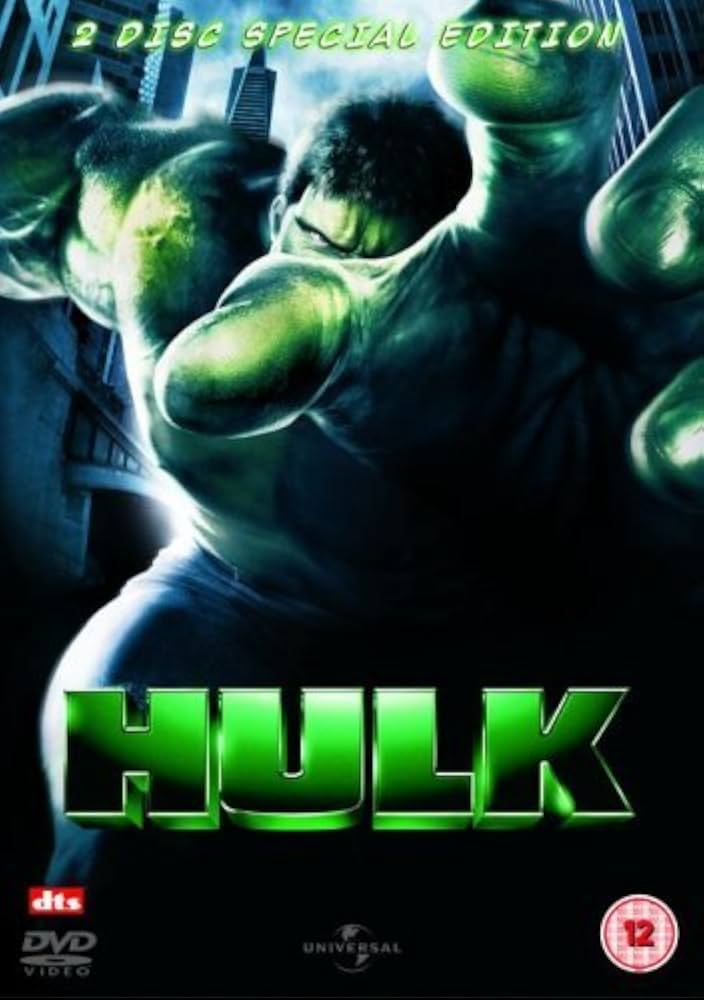 Released : 2003 Bruce Banner, a genetics researcher with a tragic past, suffers a lab accident that makes him transform into a raging, giant green monster when angered, making him a target of forces seeking to abuse his power. Notes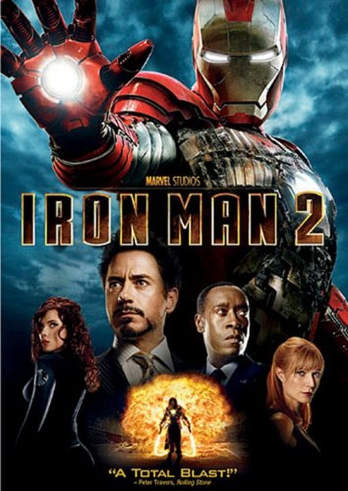 Released : 2010 With the world now aware of his identity as Iron Man, Tony Stark must contend with both his declining health and a vengeful madman with ties to his father's legacy. Notes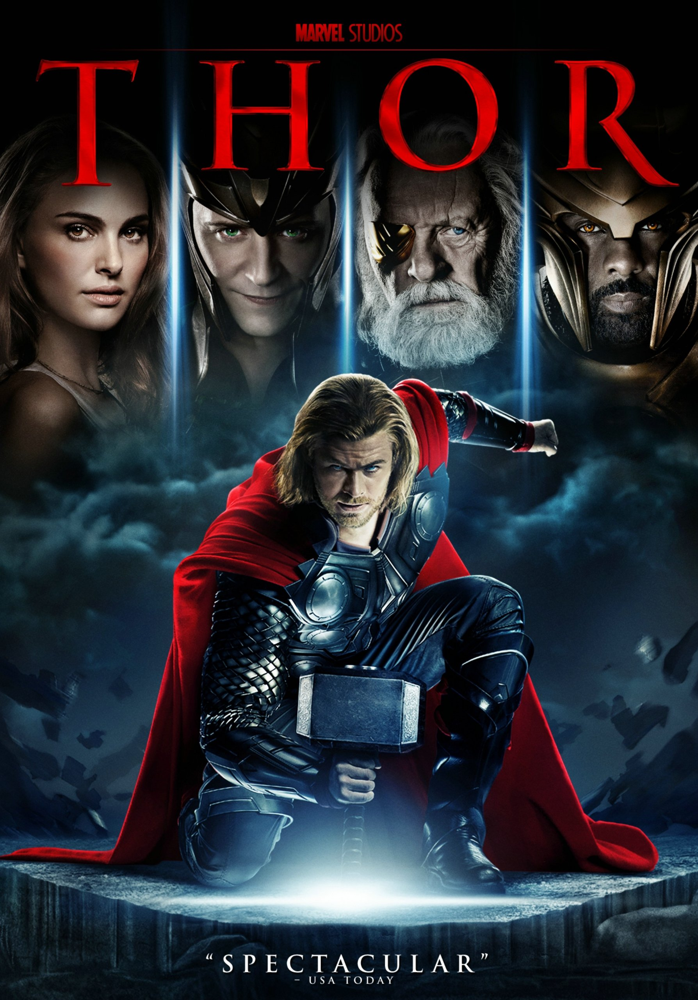 Released : 2011 The powerful but arrogant god Thor is cast out of Asgard to live amongst humans in Midgard (Earth), where he soon becomes one of their finest defenders. Notes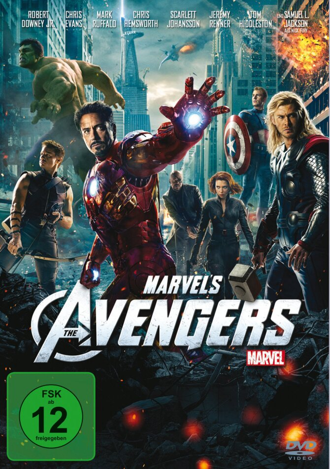 Released : 2012 Earth's mightiest heroes must come together and learn to fight as a team if they are going to stop the mischievous Loki and his alien army from enslaving humanity. NotesReleased : 2013 When Tony Stark's world is torn apart by a formidable terrorist called the Mandarin, he starts an odyssey of rebuilding and retribution. NotesReleased : 2013 When the Dark Elves attempt to plunge the universe into darkness, Thor must embark on a perilous and personal journey that will reunite him with Doctor Jane Foster. Notes
Released : 2017 Imprisoned on the planet Sakaar, Thor must race against time to return to Asgard and stop Ragnarök, the destruction of his world, at the hands of the powerful and ruthless villain Hela. NotesReleased : 2014 As Steve Rogers struggles to embrace his role in the modern world, he teams up with a fellow Avenger and S.H.I.E.L.D agent, Black Widow, to battle a new threat from history: an assassin known as the Winter Soldier. NotesSteelbook blu-ray and dvd discs
Released : 2015 When Tony Stark and Bruce Banner try to jump-start a dormant peacekeeping program called Ultron, things go horribly wrong and it's up to Earth's mightiest heroes to stop the villainous Ultron from enacting his terrible plan. NotesReleased : 2016 Political involvement in the Avengers' affairs causes a rift between Captain America and Iron Man. Notes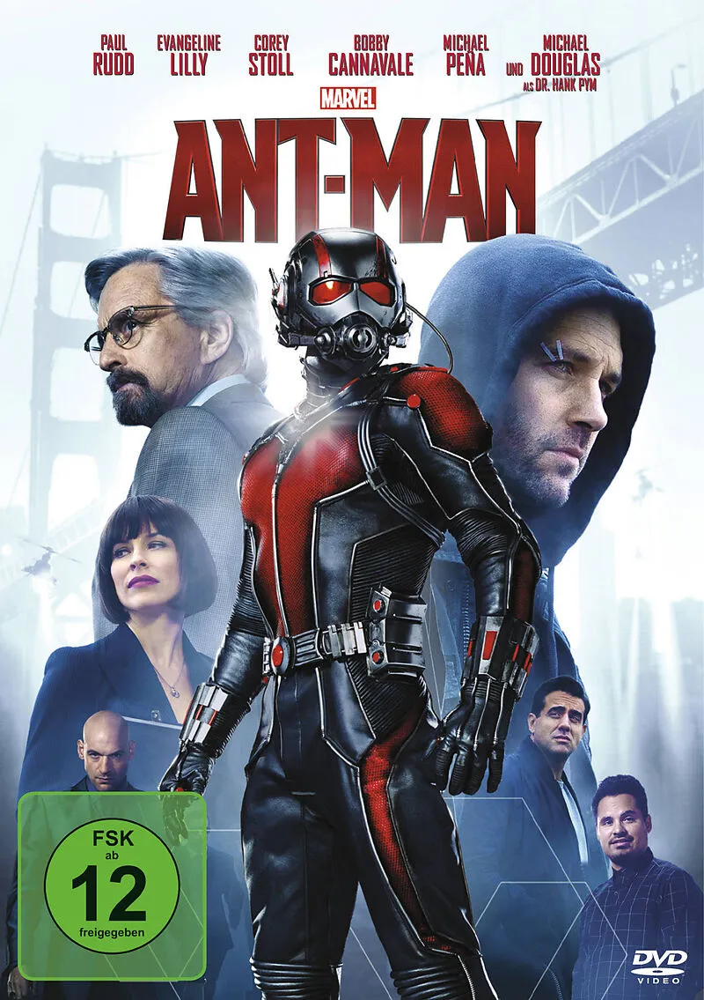 Released : 2015 Armed with a super-suit with the astonishing ability to shrink in scale but increase in strength, cat burglar Scott Lang must embrace his inner hero and help his mentor, Dr. Hank Pym, pull off a plan that will save the world. NotesReleased : 2018 The Avengers and their allies must be willing to sacrifice all in an attempt to defeat the powerful Thanos before his blitz of devastation and ruin puts an end to the universe. NotesReleased : 2019 After the devastating events of Avengers: Infinity War (2018), the universe is in ruins. With the help of remaining allies, the Avengers assemble once more in order to reverse Thanos' actions and restore balance to the universe. NotesReleased : 2021 Peter Parker turns to Doctor Strange after his identity destroys the life he knows, but a magical mistake draws powerful outsiders into his world and forces him to confront what being Spider-Man really means. Notes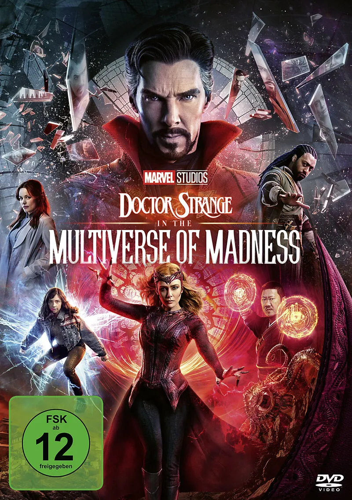 Released : 2022 Doctor Strange teams up with a mysterious teenage girl who can travel across multiverses, to battle other-universe versions of himself which threaten to wipe out the multiverse. They seek help from the Scarlet Witch, Wong and others. NotesReleased : 2025 After finding themselves ensnared in a death trap, an unconventional team of antiheroes must go on a dangerous mission that will force them to confront the darkest corners of their pasts. Notes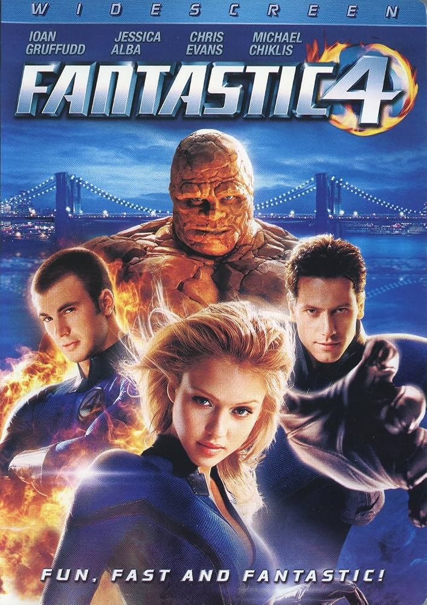 Released : 2005 A group of astronauts gain superpowers after a cosmic radiation exposure and must use them to oppose the plans of their enemy, Doctor Victor Von Doom. Notes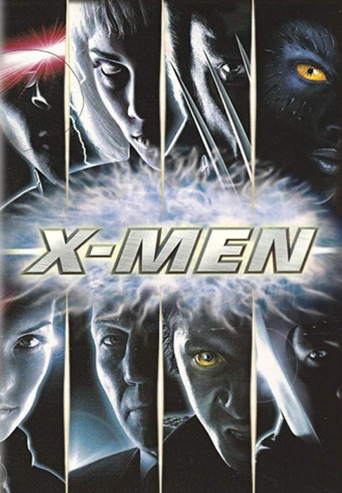
Released : 2000 In a world where mutants (evolved super-powered humans) exist and are discriminated against, two groups form for an inevitable clash: the supremacist Brotherhood, and the pacifist X-Men. Notes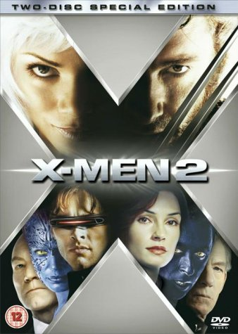
Released : 2003 When anti-mutant Colonel William Stryker kidnaps Professor X and attacks his school, the X-Men must ally with their archenemy Magneto to stop him. Notes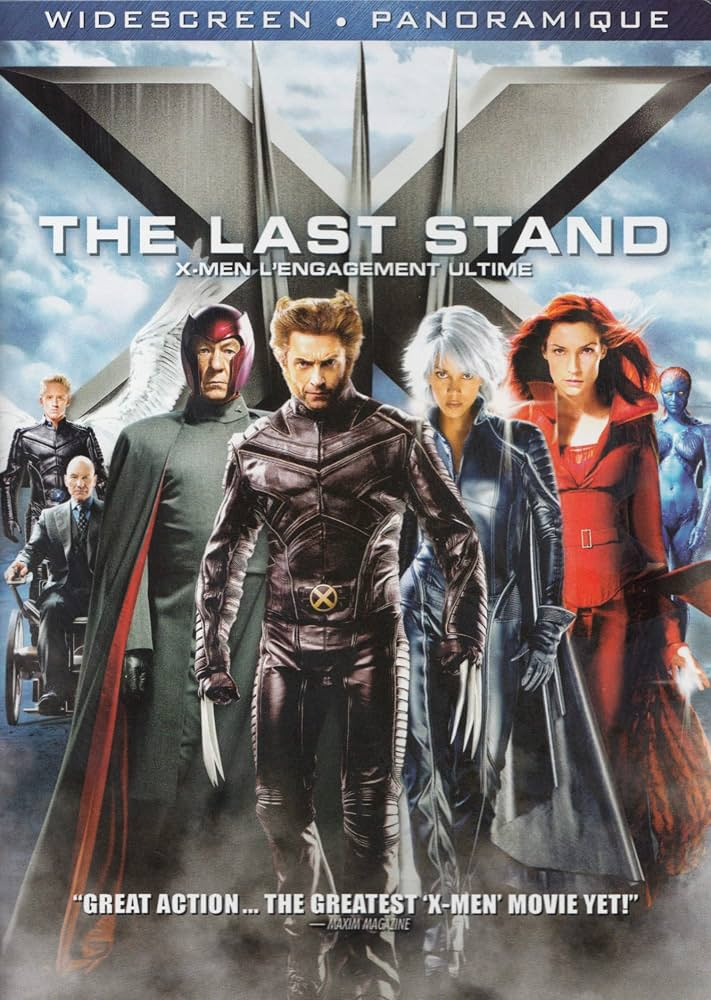 Released : 2006 The human government develops a cure for mutations, and Jean Grey becomes a darker uncontrollable persona called the Phoenix who allies with Magneto, causing escalation into an all-out battle for the X-Men. Notes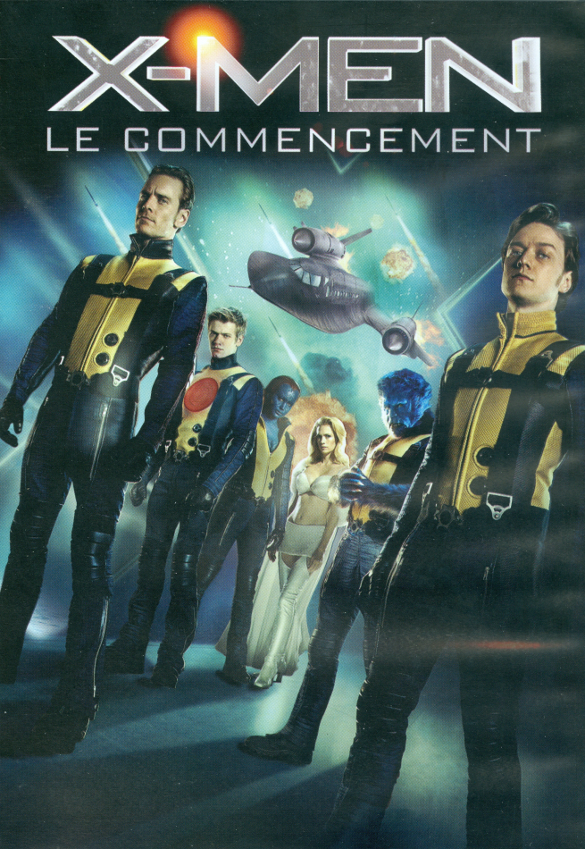
Released : 2011 In the 1960s, superpowered humans Charles Xavier and Erik Lehnsherr work together to find others like them, but Erik's vengeful pursuit of an ambitious mutant who ruined his life causes a schism to divide them. Notes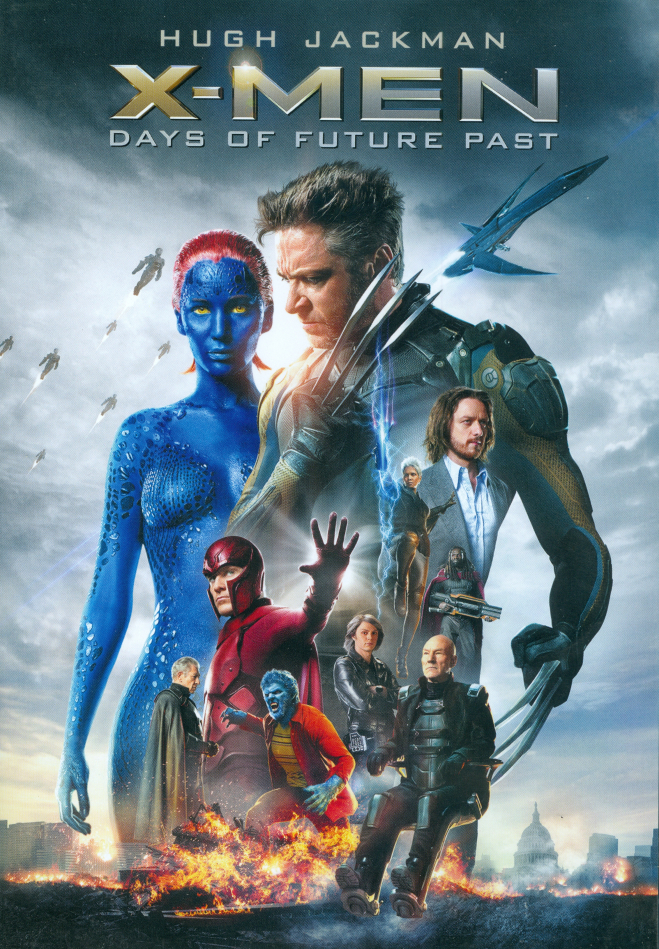
Released : 2014 The X-Men send Wolverine to the past in a desperate effort to change history and prevent an event that results in doom for both humans and mutants. Notes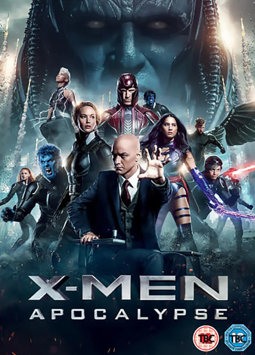 Released : 2016 In the 1980s, the X-Men must defeat an ancient all-powerful mutant, En Sabah Nur, who intends to thrive by bringing destruction to the world. Notes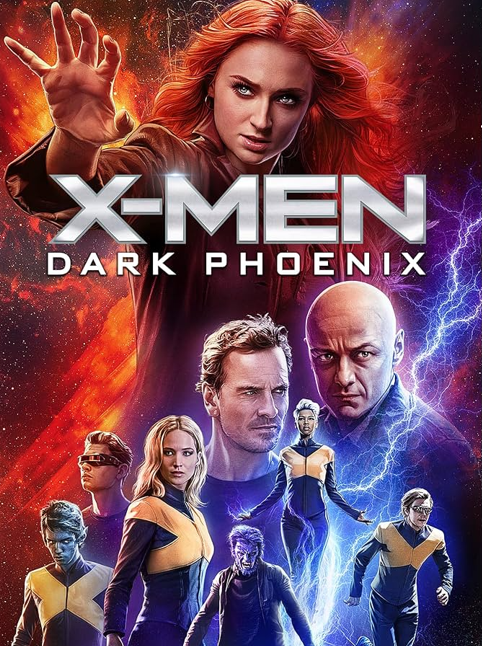 Released : 2019 Jean Grey begins to develop incredible powers that corrupt and turn her into a Dark Phoenix, causing the X-Men to have to decide if her life is worth more than all of humanity. Notes |
||||
Musicals |
||||
|
When I was a kid, I hated black and white movies and was indifferent to live action musicals. But at some point that changed. Released : 2007 The Pirate (1948) : A girl is engaged to the local rich man, but meanwhile she has dreams about the legendary pirate Macoco. A traveling singer falls in love with her and to impress her he poses as the pirate. NotesBought at a local flea market. Released : 2004 A young soprano becomes the obsession of a disfigured and murderous musical genius who lives beneath the Paris Opéra House. Notes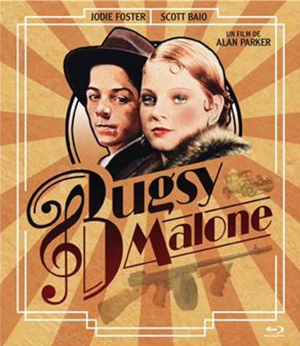 Released : 1976 The classic gangster story of Bugsy Malone told with an all-child cast. The rise of Bugsy Malone and the battle for power between gangsters Fat Sam and Dandy Dan. NotesI loved this movie so much when I was a kid ! I loved that they used pies to attack each other and the songs are really good. My favourite was always "Down and Out" for some reason. 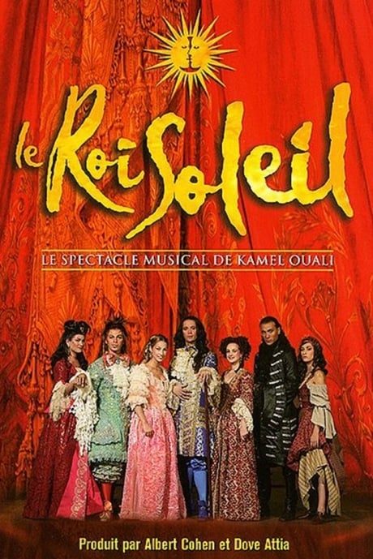 Released : 2006 Le Roi Soleil is a French musical about the life of Louis XIV. It premiered on 22 September 2005 at the Palais des Sports in Paris. Notes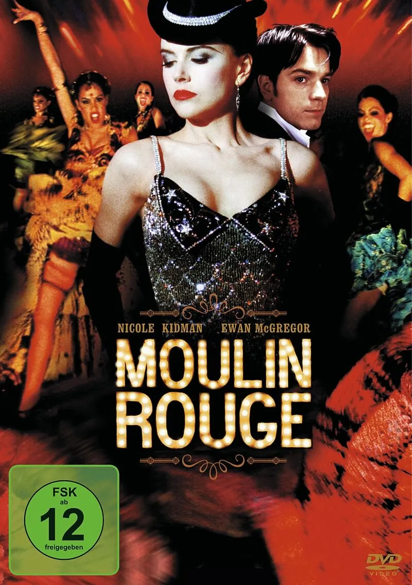 Released : 2001 A poor Bohemian poet in 1890s Paris falls for a beautiful courtesan and nightclub star coveted by a jealous duke. Notes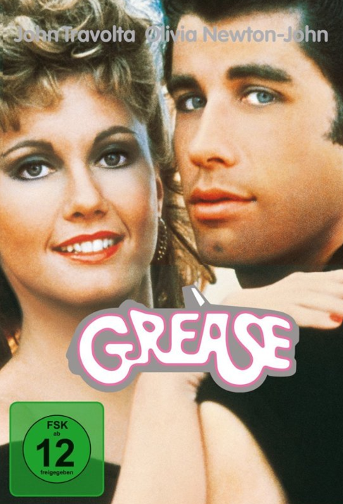
Released : 1978 Good girl Sandy Olsson and greaser Danny Zuko fell in love over the summer. When they unexpectedly discover they're now in the same high school, will they be able to rekindle their romance? NotesGrease is a childhood movie for me. The opening never fails to drown me in nostalgia. My favourite song has always been "Greased Lightnin'" but they're all soooo good ! 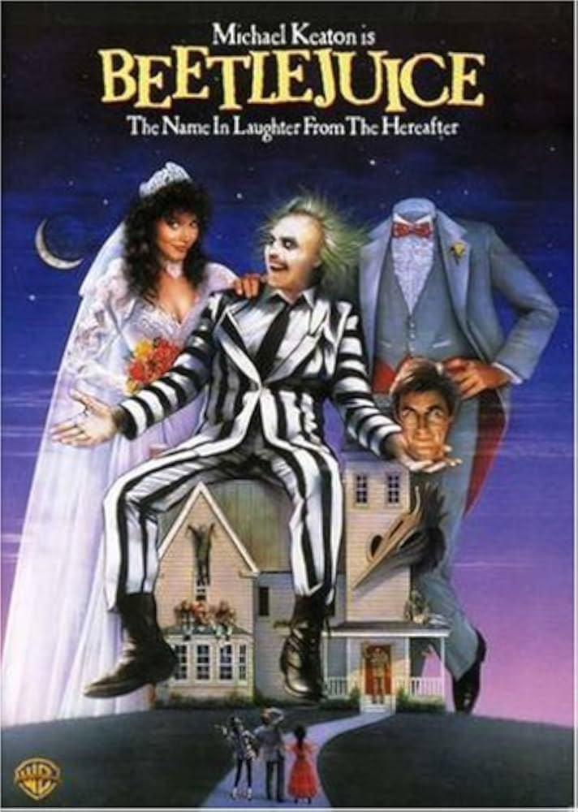 Released : 1988 The spirits of a deceased couple are harassed by an unbearable family that has moved into their home, and hire a malicious spirit to drive them out. Notes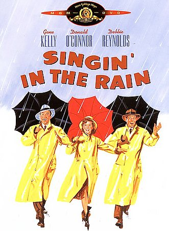
Released : 1952 I love this movie so so much ! The songs are just incredible :) Notes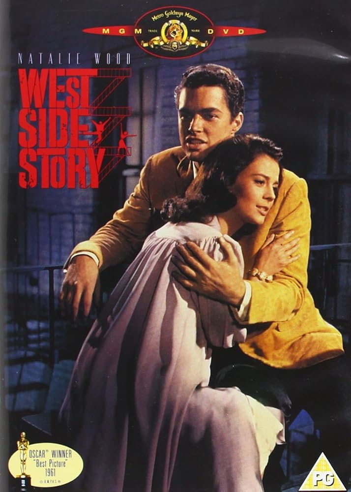
Released : 1961 Yes, I have multiple copies of this movieTwo youngsters from rival New York City gangs fall in love, but tensions between their respective friends build toward tragedy. NotesNow for some reason I'm completely obsessed with this movie. I've lost count of the times I’ve rewatched it.
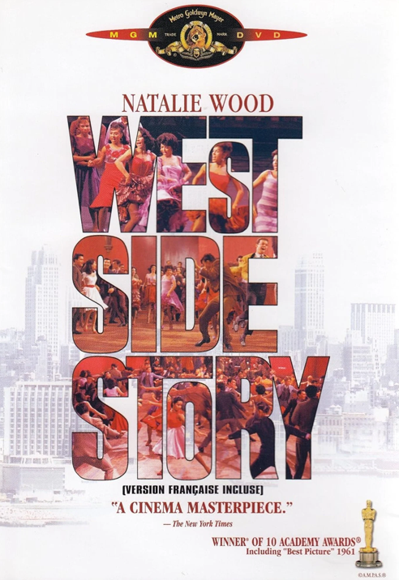 Released : 1946 Songwriter and Broadway pioneer Jerome Kern is unable to find immediate success in the U.S. He sought recognition abroad. He journeyed to England where his dreams of success became real and where he met his future wife Eva Leale. Notes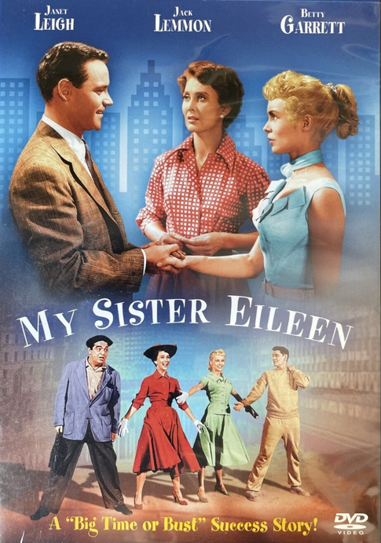 Released : 1955 After submitting a story of her beautiful sister, a woman assumes her identity to maintain the attention of a playboy publisher. NotesThis was a hard dvd to find. 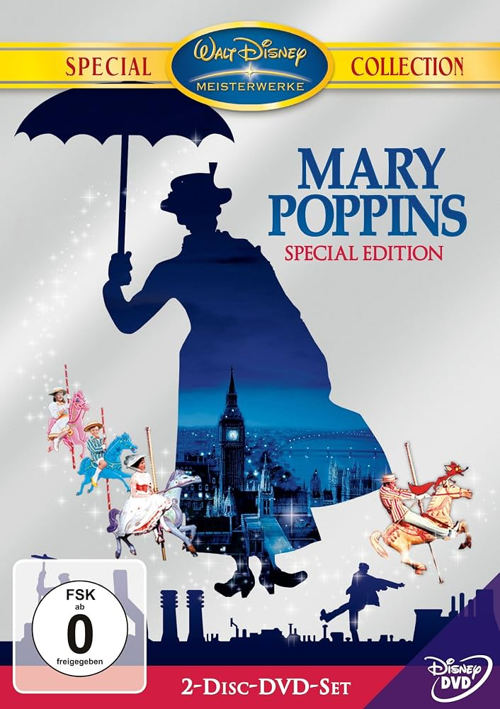
Released : 1964 In turn of the century London, a magical nanny employs music and adventure to help two neglected children become closer to their father. NotesA classic of my childhood like many people around the world ! Although, I haven't rewatched it since then, the nostalgia would just destroy me. Released : 1957 An Iowa pajama factory worker falls in love with an affable superintendent who was hired by the factory boss to deny the workers' demand for a pay raise. NotesReleased : 2021 Compilation of 16 classic musicalsAn American in Paris (1951) : Three friends struggle to find work in Paris. Things become more complicated when two of them fall in love with the same woman. Notes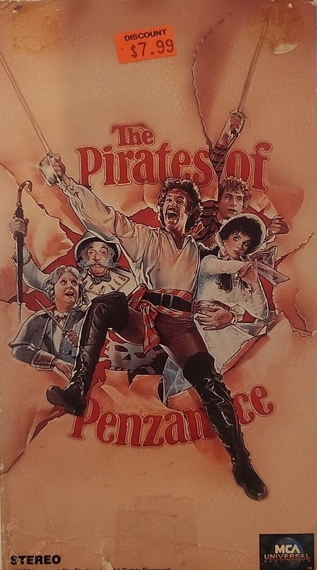 VHS
Released : 1983 After a young man leaves a band of pirates, hilarity ensues. NotesI watched it a couple times when I was a kid. The part I always found funny/impressive was when that one policeman swings his arm in a full circle. |
||||
Japanese Animations |
||||
Studio Ghibli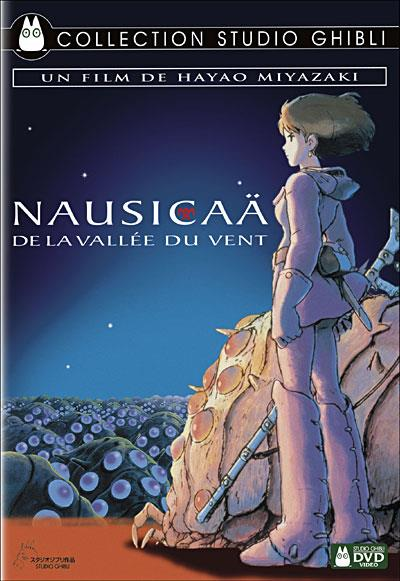
Released : 1984 Warrior and pacifist Princess Nausicaä desperately struggles to prevent two warring nations from destroying themselves and their dying planet. Notes
Released : 1986 Pazu's life changes when he meets Sheeta, a girl whom pirates are chasing for her crystal amulet, which has the potential to locate Laputa, a legendary castle floating in the sky. Notes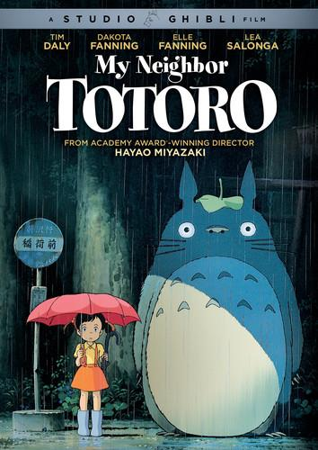
Released : 1988 When two girls move to the country to be near their ailing mother, they have adventures with the wondrous forest spirits who live nearby. NotesSuch a childhood classic ♡ Released : 1992 In 1930s Italy, a veteran World War I pilot is cursed to look like an anthropomorphic pig. Notes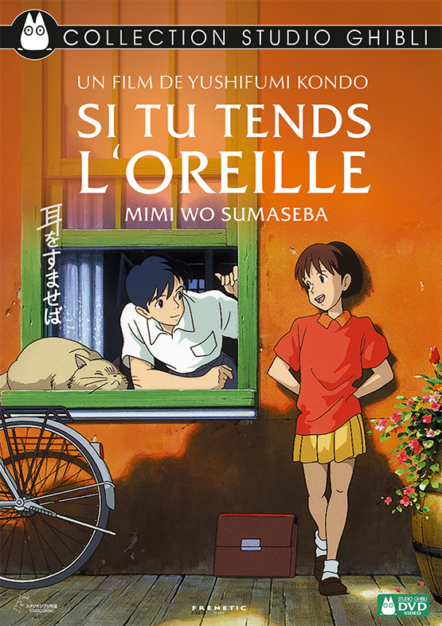 Released : 1995 A love story between a girl who loves reading books and a boy who has previously checked out all of the library books she chooses. Notes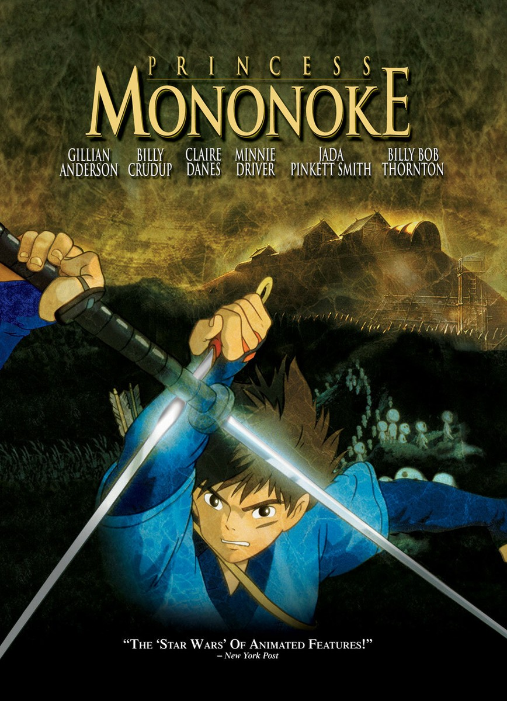
Released : 1997 After a deadly curse forces him from home, young warrior Ashitaka journeys west and is drawn into a conflict between ancient forest spirits, an iron town, and a wolf-raised girl. Notes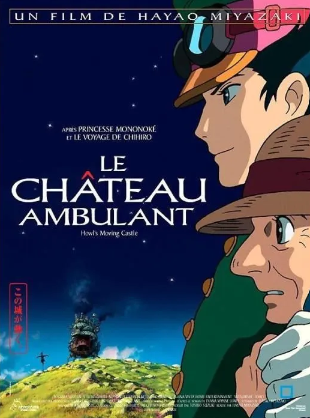
Released : 2004 When an unconfident young woman is cursed with an old body by a spiteful witch, her only chance of breaking the spell lies with a self-indulgent yet insecure young wizard and his companions in his legged, walking castle. NotesOne of my favourite Ghibli movies ! 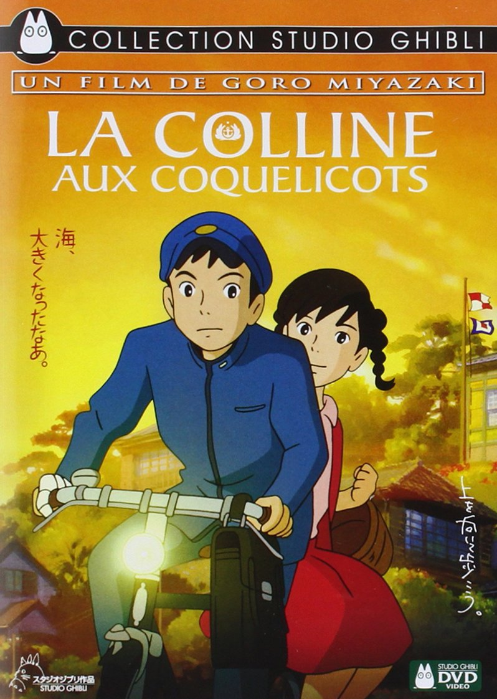 Released : 2011 A group of Yokohama teens look to save their school's clubhouse from the wrecking ball in preparations for the 1964 Tokyo Olympics. NotesMakoto ShinkaiReleased : 2016 Two teenagers, a city boy in Tokyo and a girl in rural Japan, mysteriously begin swapping bodies, forging a connection that sends them searching for one another. Notes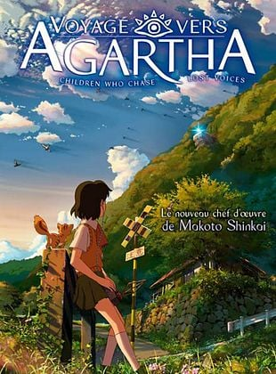 Released : 2011 A coming of age story involving young love and a mysterious music, coming from a crystal radio left as a memento by an absent father, that leads a young heroine deep into a hidden world. NotesMamoru Hosoda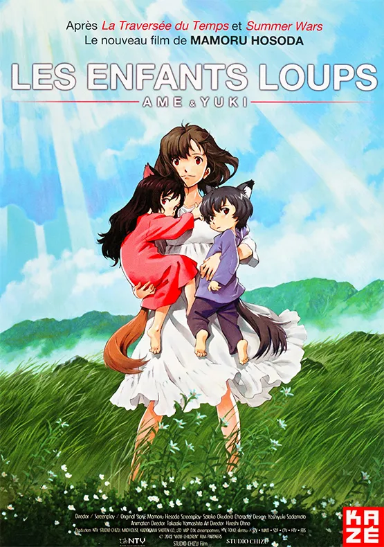 Released : 2012 After her werewolf lover unexpectedly dies in an accident, a young woman must find ways to raise their werewolf son and daughter while keeping their trait hidden from society. NotesUsed to love the manga !
Released : 2009 A student tries to fix a problem he accidentally caused in OZ, a digital world, while pretending to be the fiancé of his friend at her grandmother's 90th birthday. NotesWatched it a bunch as a kid ! 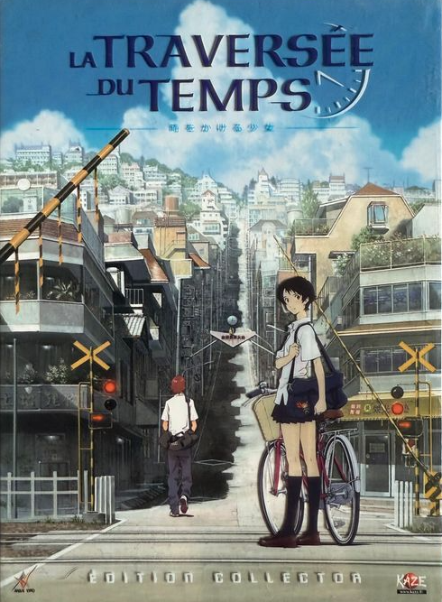 Released : 2006 A high-school girl named Makoto acquires the power to travel back in time, and decides to use it for her own personal benefits. Little does she know that she is affecting the lives of others just as much as she is her own. NotesOther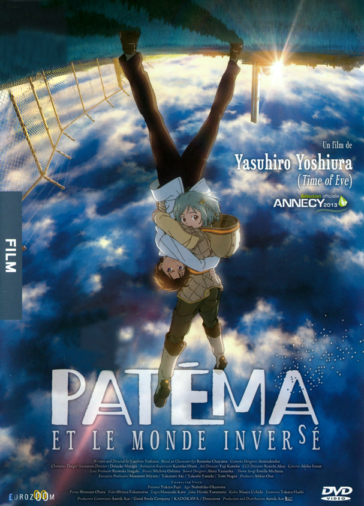
Released : 2013 A young girl, from a civilization that resides in deep underground tunnels, finds herself trapped in an inverted world and teams up with a resident to escape and return home. Notes |
||||
Fantasy |
||||
|
My favourite movie genre ! 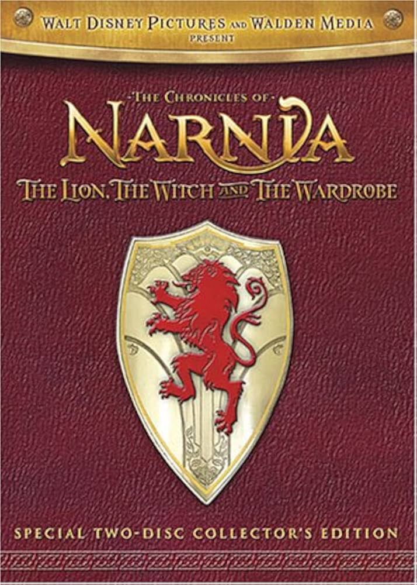
Released : 2005 Four siblings wind up entering the magical land of Narnia. Once there, they discover a world inhabited by fantastical creatures and find themselves in a battle to defeat a witch. Notes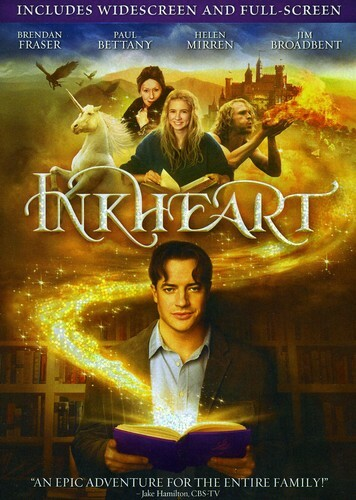
Released : 2008 A teenage girl discovers her father has an amazing talent to bring characters out of their books and must try to stop a freed villain from destroying them all, with the help of her father, her aunt, and a storybook's hero. NotesI haven't read the book. 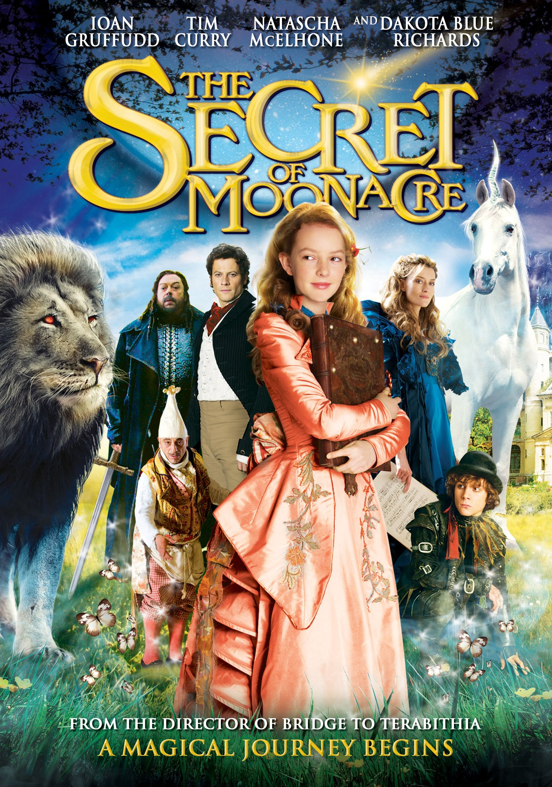
Released : 2008 Maria inherits a book of secrets from her dad. She moves to her uncle's Moonacre estate. A family curse was cast on the valley. Only Maria can break it using her book. NotesI haven't read the book. 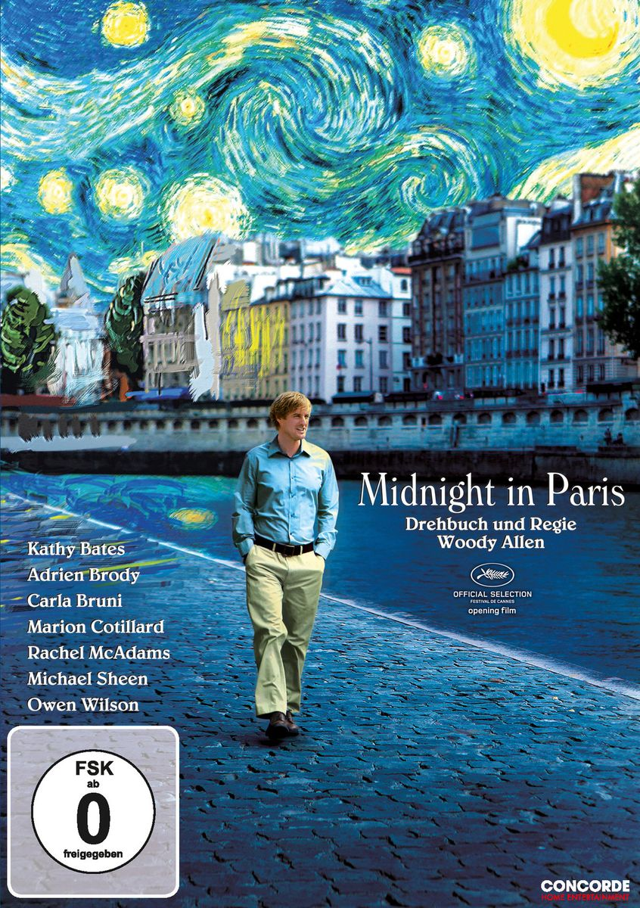
Released : 2011 While on a trip to Paris with his fiancée's family, a nostalgic screenwriter finds himself mysteriously going back to the 1920s every day at midnight. NotesI related to Gil so much. 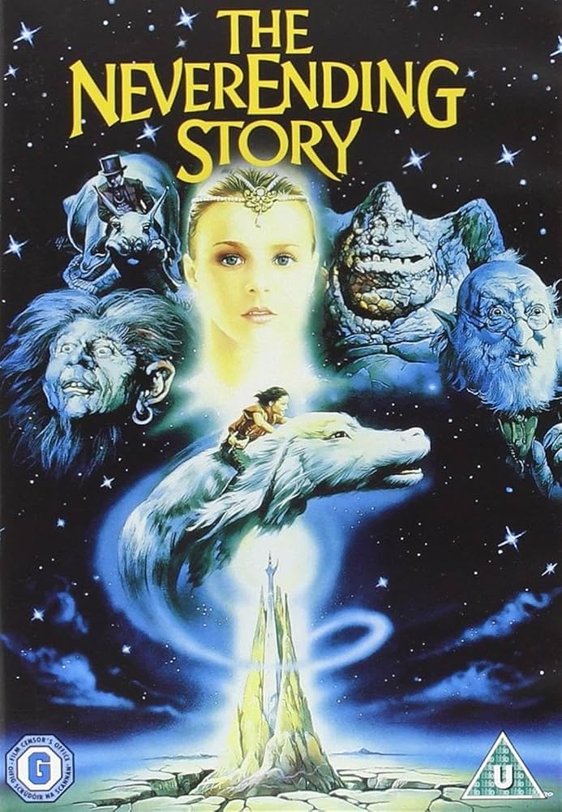
Released : 1984 Bastian finds a magical book in an old bookstore that takes him on an adventure into the land of Fantasia. NotesI cried when Atreyu's horse died :') 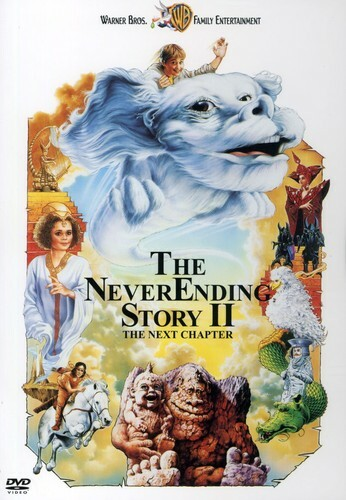 Released : 1990 A young boy with a distant father enters a world of make-believe and magic through a portal within an antique book. Notes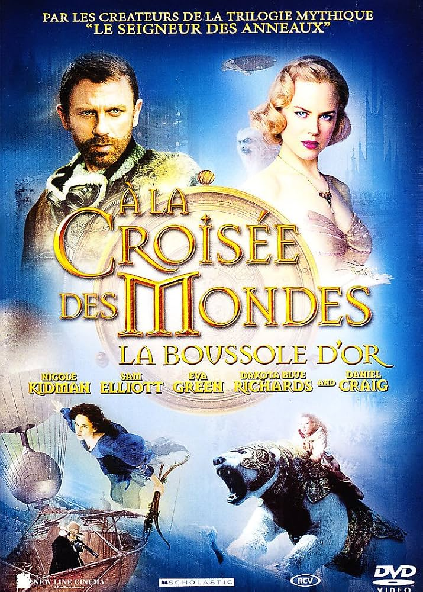 Released : 2007 In a parallel universe, young Lyra Belacqua journeys to the far North to save her best friend and other kidnapped children from terrible experiments by a mysterious organization. Notes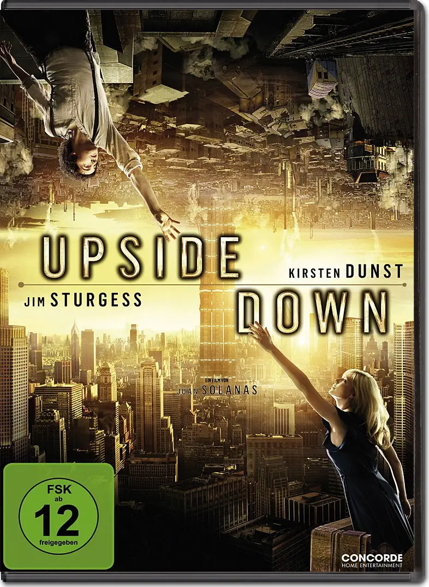 Released : 2012 Adam and Eden fell in love as teens despite the fact that they live on twinned worlds with gravities that pull in opposite directions. Ten years after a forced separation, Adam sets out on a dangerous quest to reconnect with his love. Notes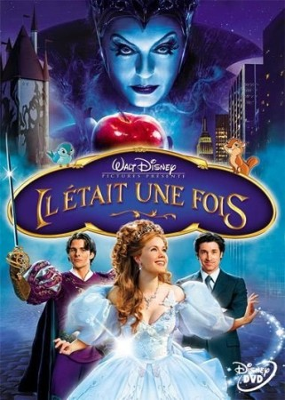 Released : 2007 A young maiden in a land called Andalasia, who is prepared to be wed, is sent away to New York City by an evil Queen, where she falls in love with a lawyer. Notes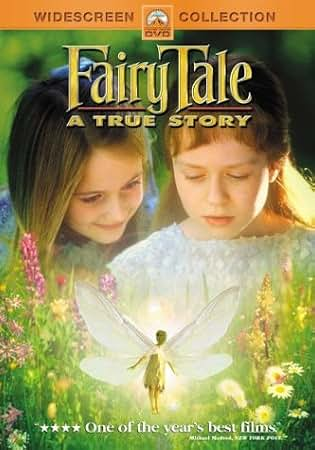 Released : 1997 In 1917, two children take a photograph, which is soon believed by some to be the first scientific evidence of the existence of fairies. Notes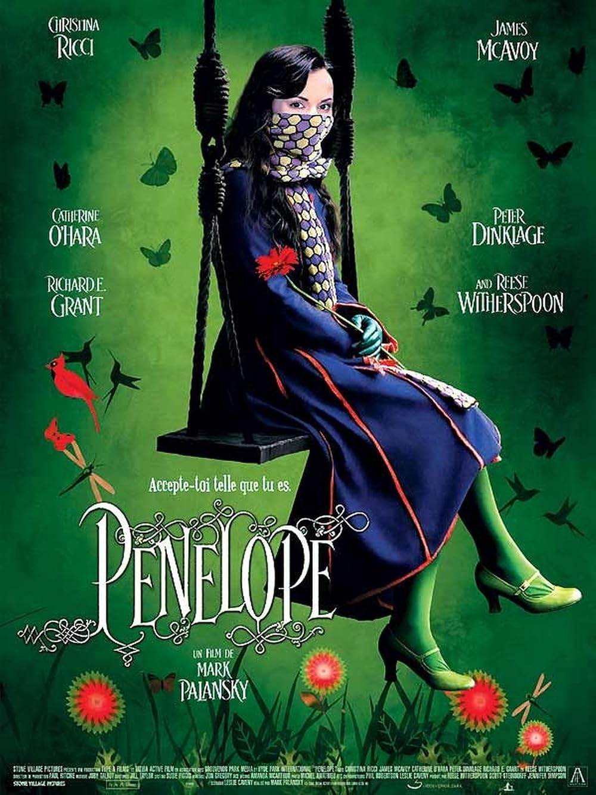 Released : 2006 A modern romantic tale about a young aristocratic heiress born under a curse that can only be broken when she finds true love with "one who will accept her as one of their own." Notes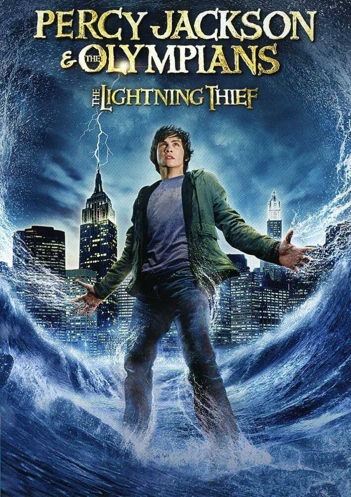 Released : 2010 A troubled teen discovers he is the son of Poseidon and sets out with friends to recover Zeus's stolen lightning bolt before a war among the gods erupts. NotesDefinitely doesn't follow the book much but as a separate movie, it's not that bad. Released : 2023 When a goddess of war reincarnates in the body of a young girl, street orphan Seiya discovers that he is destined to protect her and save the world. But only if he can face his own past and become a Knight of the Zodiac. NotesReleased : 2014 An unexpected romance blooms after the youngest daughter of a merchant who has fallen on hard times offers herself to the mysterious beast to which her father has become indebted. Notes
Released : 2007 The young apprentice of a magical, eccentric toy store owner learns to believe in herself, and in her friends, upon learning some grave news about the future. NotesLoved this movie so much as a kid ! |
||||
Sci-fi |
||||
|
Released : 1982 A computer hacker is abducted into a digital world and forced to participate in gladiatorial games where his only chance of escape is with the help of a heroic security program. NotesMy parents used to show us the animated TV series as well, it was so fun !
Released : 2010 The son of a computer programmer goes looking for his father and ends up inside the digital world that his father designed. He meets his father's corrupted creation and a unique ally who was born inside the digital world. NotesAbsolutely LOVE the visuals !!
Released : 2009 A paraplegic Marine dispatched to the moon Pandora on a unique mission becomes torn between following his orders and protecting the world he feels is his home. Notes
blu-ray 3d, blu-ray, DVD
Released : 2009 A paraplegic Marine dispatched to the moon Pandora on a unique mission becomes torn between following his orders and protecting the world he feels is his home. Notes
blu-ray
Released : 2010 A paraplegic Marine dispatched to the moon Pandora on a unique mission becomes torn between following his orders and protecting the world he feels is his home. Notes
blu-ray
Released : 2022 Jake Sully lives with his newfound family formed on the extrasolar moon Pandora. Once a familiar threat returns to finish what was previously started, Jake must work with Neytiri and the army of the Na'vi race to protect their home. Notes
Released : 2025 Jake and Neytiri's family grapples with grief, encountering a new, aggressive Na'vi tribe, the Ash People, who are led by the fiery Varang, as the conflict on Pandora escalates and a new moral focus emerges. NotesReleased : 1999 A computer hacker discovers that his life is nothing more than an elaborate simulation run by an evil AI. Notes |
||||
Classics |
||||
|
Released : 2007 Compilation of 3 classic holiday movies from MGMThe Bishop's Wife (1947) : A debonair angel comes to Earth to help an Episcopalian bishop and his wife in their quest to raise money for the new church. NotesReleased : 1956 Sprawling epic covering the life of a Texas cattle rancher and his family and associates. Notes
2x 4K Ultra HDs, 2x Blu-rays
Released : 1983 In Tulsa, Oklahoma in 1964, the rivalry between two gangs, the poor Greasers and the rich Socs, heats up when one gang member accidentally kills a member of the other. NotesObsessed with the movie and the book. |
||||
Whimsy (not fantasy) |
||||
|
Released : 1995 Sara is sent to a strict boarding school after her father enlists in WWI. When he is presumed dead, the headmistress, knowing she will not receive any more money, forces the girl to become a servant. Notes
Released : 1993 A young, recently-orphaned girl is sent to England after living in India all of her life. Once there, she begins to explore her new, seemingly-isolated surroundings, and its secrets. Notes |
||||
Other |
||||
|
Released : 2025 Follows the lives of the cousins who inherit an old house in rural Normandy and retrace the steps of their ancestors in 19th century Paris. NotesReleased : 2004 The story of Sir J.M. Barrie's friendship with a family who inspired him to create Peter Pan. NotesReleased : 1988 An author tells the story of how, as a young boy growing up in a 1960s small town, he was haunted after witnessing the murder of a little girl. Notes
Released : 2009 An urbane fox cannot resist returning to his farm raiding ways and then must help his community survive the farmers' retaliation. Notes |
||||